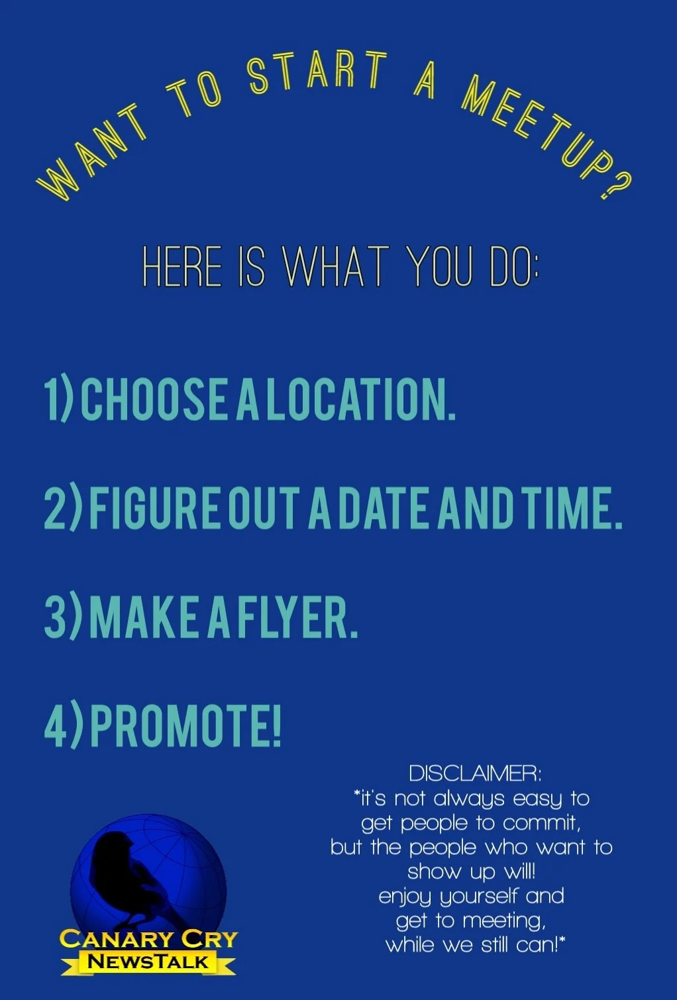

Two layouts for upcoming meet-up posters and the archive of past ones. The site has one poster so far (the
"Want to start a meetup?" flyer); every other slot is marked "Poster to come", with the real place and date
from the Meet-Ups page. The map is a separate question, in its own lab.
Option A Poster wall
Big posters for what's coming up, then a gallery wall of past posters.
Community
Meet-ups
Coming up
Poster to comeTrondheim, Norway
NextTrondheim, NorwayJune 21 · EU producer chapter

Host oneStart a meet-up near youPennsylvania and NorCal are looking for hosts
Past meet-ups
Poster to comeHouston
Houston, TXMay 24
Poster to comeCherryville
Cherryville, NCMay 03
Poster to comeKansas City
Kansas City, MOApr 25
Poster to comeLos Angeles
Los Angeles, CAMar 03
Poster to comeLouisville
Louisville, KYKentucky chapter
Poster to comeNorCal
Humboldt County, CANorCal chapter
Best when: most meet-ups have a poster; the posters do the talking.
On a phone: two upcoming posters side by side, then the archive three across.
Option B Timeline
One list by date, newest first, each meet-up with a small poster; the host flyer sits alongside.
Community
Meet-ups
Every meet-up
Poster to come
NextTrondheim, NorwayJune 21 · EU producer chapter
Poster to come
Houston, TXMay 24
Poster to come
Cherryville, NCMay 03 · Carolinas
Poster to come
Kansas City, MOApr 25
Poster to come
Los Angeles, CAMar 03
Earlier: Louisville, KY · Humboldt County, CA
Start a meet-up near youPennsylvania and NorCal are looking for hosts.
Best when: posters are patchy; the dates and places carry the page and a missing poster doesn't leave a gap.
On a phone: the timeline first, the host flyer after it.
What we need from you
Which layout should we build: A or B? Any change you'd make to it? Comment your pick on
issue #12.
We also need the posters: do you have them for past meet-ups (Houston, Cherryville, Kansas City, Los Angeles,
Louisville, NorCal) and for Trondheim? Hosts' contact details would stay off the page, as they are now.